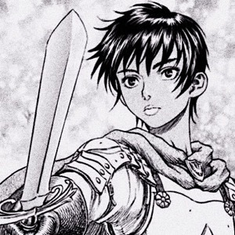
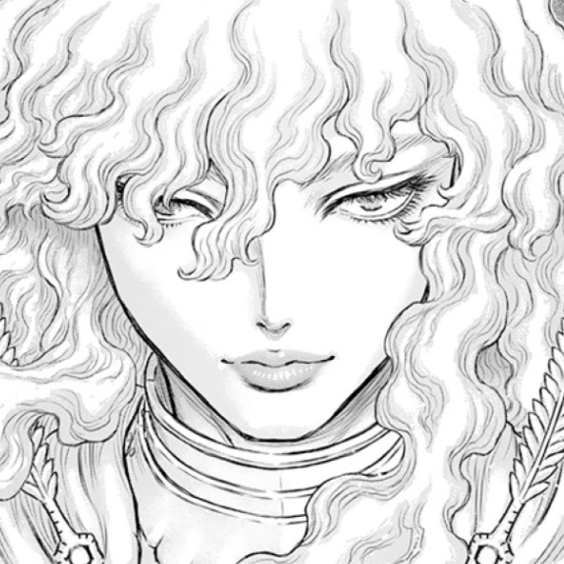

Guts
Guts, the Black Swordsman, is the main protagonist of the series. Known for his strength, determination, and unyielding will, he battles his way through overwhelming odds, both human and supernatural, in his quest for revenge and redemption.

Casca
Casca is a former member of the Band of the Hawk, once Griffith's most trusted warrior. She shares a deep, complex relationship with Guts, and her character arc is one of trauma, strength, and recovery.

Griffith
Griffith is the charismatic and ambitious leader of the Band of the Hawk. His dream of ruling his own kingdom and his complex relationships with Guts and Casca make him one of the most intriguing characters in the series.